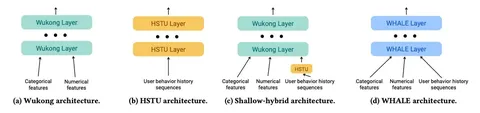

Сегодня разбираем статью от Meta*. Это практическая работа о том, как в большом сервисе коротких видео повысить качество модели на этапе финального ранжирования. О жёстких ограничениях латенси тоже не забываем.
Главный вопрос — куда направить дополнительный вычислительный бюджет в рантайме. Варианты такие:
- на моделирование взаимодействий признаков,
- на моделирование последовательности действий пользователя,
- на то и другое.
Авторы выбрали третий вариант и предложили WHALE — архитектуру из двух параллельных веток с модулем фьюзинга:
1) Wukong-модуль работает со стандартными числовыми фичами: счётчиками и предиктами нижестоящих моделей.
2) HSTU-модуль обрабатывает исходную пользовательскую историю до 15 тысяч событий.
На каждом слое Wukong через cross-attention обращается к состояниям HSTU и вытаскивает информацию, релевантную конкретному кандидату. Получившееся представление передаётся на вход следующего слоя, там всё повторяется.
Информация идёт только из истории в Wukong, но не обратно, поэтому ветвь вычисления HSTU не зависит от кандидата. Таким образом длинную историю пользователя можно посчитать один раз и переиспользовать KV-cache для всех кандидатов.
В экспериментах авторы проверили, что вообще выгоднее масштабировать (вопрос, заданный в начале). Их основная оффлайн-метрика — Normalized Entropy (NE) — показывает улучшение logloss-модели относительно оптимальной константы. При сопоставимом бюджете на вычисления увеличение только Wukong дало всего до +0,06% NE, что близко к уровню шума. Масштабирование HSTU даёт +0,73%, а масштабирование сразу обеих ветвей в WHALE — уже +1,39%.
Отдельно проаблейтили раннее связывание через attention-механизм. Если cross-attention заменить обычным mean-пулингом, результат получается хуже на 0,23% NE. Почти весь выигрыш — именно от выборочного извлечения информации из несжатой истории.
Также WHALE проверили в двухнедельном A/B-тесте на срезе рекомендаций некоторой неназванной соцсети. По основной онлайн-метрике авторов получили +0,113% при снижении inference QPS на 5%.
Главный вывод, который тут подтвердили — дополнительный компьют в финальном ранжировании выгоднее тратить на длинную пользовательскую историю и её взаимодействие с кандидатом по глубине сети. Принципиально новой идеи здесь, кажется, нет. Но зато авторы взяли сильные бейзлайны, собрали из них нафаршированную модель и довели её до успеха в онлайне.
@RecSysChannel
Разбор подготовил
___
Компания Meta признана экстремистской; её деятельность в России запрещена.
